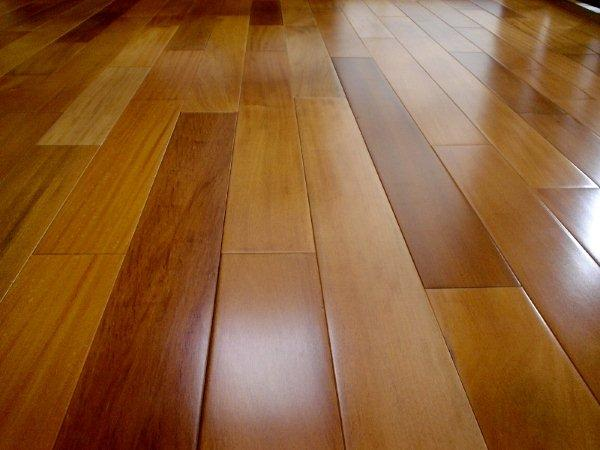

Para complementar nosso sistema de serviços também oferecemos uma enorme variedade de pisos e azulejos para decorar suas paredes e o seu chão. Veja abaixo alguns exemplos de tipos de pisos comprados pelos nossos clientes:
Esse piso de mármore é mais usado em ambientes internos, muito usado por ser sofisticado e além disso remete a decoração nórdica.
Esse tipo de piso é o assoalho de madeira, muito desejado por ser um piso de matéria prima pura, sem mudanças em sua estrutura, ele é mais espesso e durável. Mas risca facilmente e pode gerar ruidos desagradaveis.
Esse piso, o porcelanato é desejado por sua qualidade e resistência. Tem variadas texturas, imitando madeira, cimento, mármore e outros. Combina com decorações variadas e é usado em muitos ambientes.
Este ultimo piso é de granito, usado em casas, aeroportos, supermercados e shoppings. Procurado por sua durabilidade, resistência e beleza, além de ser mais facil de limpar.
Veja também alguns exemplos de azulejos comprados e usados pelos clientes:
Esse azulejo possui uma variedade de detalhes listrados e em mandalas, além de outras formas.
Esse azulejo conta com mais divercidade em detalhes, com um estilo mais mosaico, com varias formas e listras.
Esse azulejo português representa a cultura de portugal, tem raízes na Península Ibérica a partir do século XV, além de contar com uma divercidade de cores azul e branca.
Este ultimo azulejo conta com varios detalhes floridos e com mandalas, além de outras formas geométricas.